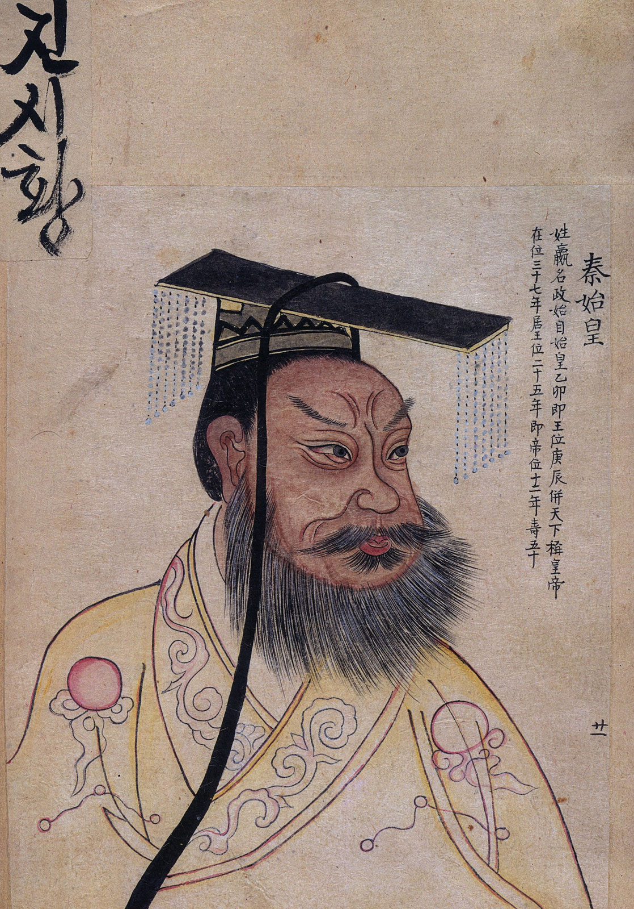

bestuur
 De eerste keizer van China was Qin Shi Huangdi. Hij bracht alle vechtende staten in 221 voor Christus samen tot een land, China. Hij creerde eenheid in China door het invoeren van maten, gewichten, hetzelfde schrift en 1 munteenheid. Qin deed goede dingen maar ook zeker slechte. Zo liet hij 460 wetenschappers vermoorden omdat dat nieusgierige mensen zijn die niet zomaar bevelen opvolgen. Na 11 jaar geregeerd te hebben stierf Qin Shi Huangdi in 221 voor Christus.
De Chinese Muur
Tijdens de heerschappij van Qin werd China aangevallen door de Xiongnu. Qin liet daarom alle bestaande verdedegingswerken combineren tot 1 bouwwerk, De Chinese Muur. Na 15 jaar werd het gebouw voltooid. De Chinese Muur heeft door de jaren heen vele oorlogen in China dorstaan en staat sinds 1987 op de werelderfgoedlijst van UNESCO. Mensen zeggen dat de Chinese Muur het enige door mensgebouwde bouwerk is dat je vanuit de ruimte kan zien. Helaas is dit een fabeltje en is de Chinese Muur niet vanuit de ruimte te zien.
Einde
Qin was bang voor de dood en wilde onsterfelijk zijn. Qin liet daarom allemaal wetenschappers komen om een drank te maken waardoor hij eeuwig zou leven. 1 van die dranken bevatte helaas kwik. Kwik is dodelijk als het het menselijklichaam binnendringt. Qin is waarschijnlijk dus gestorven aan de inname van kwik. Je zou dus kunnen zeggen dat Qin door zijn eigen waanidee aan zijn einde is gekomen. Qin had wel al een gigantisch graf laten bouwen door 700000 slaven die het bouwerk in 3 jaar voltooide. alle slaven werden na de bouw levend begraven zodat de geheimen van het graf zich nooit zouden kunnen openbaren. Samen met Qin ging nog een heel leger mee het graf in, het terracottaleger. Helaas is het terracottaleger in 207 voor Chistus voor het grootste deel vernietigd. Tot op de dag van vandaag zijn er mensen bezig de beelden te herstellen.